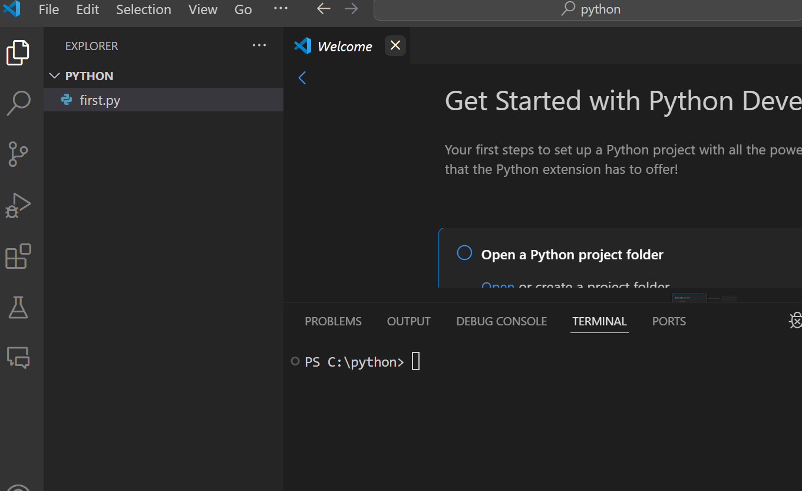

Python är ett programmeringsspråk som är enkelt att lära sig och använda. Det är ett högnivåspråk som är lättläst och har en enkel syntax. Python är ett populärt språk inom datavetenskap och används för att skapa webbapplikationer, spel, artificiell intelligens och mycket mer.
Visual Studio Code är en texteditor som är utvecklad av Microsoft och är gratis att använda. Den har stöd för flera olika programmeringsspråk, inklusive Python. Visual Studio Code har många användbara funktioner, som syntaxhöjning, kodkomplettering och inbyggd felsökning.
Vi kommer att använda Visual Studio Code för att skriva och köra våra Python-program. Du kan ladda ner Visual Studio Code från här.
En Python-interpreter är ett program som tolkar och kör Python-kod. Det finns flera olika Python-interpreters till exempel CPython, Jython, IronPython och PyPy. Vi kommer att använda CPython, som är den vanligaste och mest populära Python-interpretern.
I windows-store kan man installera Python genom att söka efter Python och installera det.
Den versionen som jag kommer använda är 3.12.
I Visual Studio Code är det smidigt att ha alla filer som man jobbar med i en och samma mapp.
Det är ävan smidigt att ha en terminal öppen i samma mapp.
För att göra detta enkelt kommer vi arbeta med en mapp som vi kallar för python.
Denna lägger vi i rooten å c: disken.
Vi kommer att ha alla våra python-filer i denna mapp.
När vi öppnar denna mapp i Visual Studio Code kommer vi att ha en terminal öppen i denna mapp.
File->Open Folder->c:\python
Detta gör att vi slipper navigera till mappen där filen ligger för att köra den.
Och att vi kan snabbt se resultatet av våra ändringar.
För att skriva och köra ett Python-program behöver du en texteditor och en Python-interpreter. Här är ett enkelt exempel på ett Python-program som skriver ut ditt namn och ålder:
name = "Stefan"
age = 30
print("Hej, mitt namn är " + name + " och jag är " + str(age) + " år gammal.")
För att köra detta program behöver du spara det i en fil med filändelsen .py, t.ex. hello.py. Öppna en terminal och navigera till mappen där filen är sparad. Skriv sedan python hello.py och tryck på Enter. Programmet kommer att köras och skriva ut ditt namn och ålder på skärmen.
Den texteditor som vi kommer använda är Visual Studio Code och Python-interpretern som vi kommer använda är den senaste versionen just nu 3.12.
När jag kör mina program kommer jag använda en såkallad debugger som finns inbyggd i Visual Studio Code.

Detta gör att jag kan stega igenom mitt program rad för rad och se vad som händer i varje steg.
Detta gör jag för att ni enklare skall hänga med på vad som sker.
Jag kanske skulle vilja göra programmet mer interaktivt genom att använda input() för att låta användaren mata in sitt namn och ålder.
Då skulle man behöva använda input som är en inbyggd funktion i python som används för att ta in data från användaren.
Exempel:
name = input("Skriv ditt namn: ")
age = input("Skriv din ålder: ")
print("Hej, mitt namn är " + name + " och jag är " + age + " år gammal.")
Detta program kommer att be användaren att skriva in sitt namn och ålder, och sedan skriva ut det på skärmen.